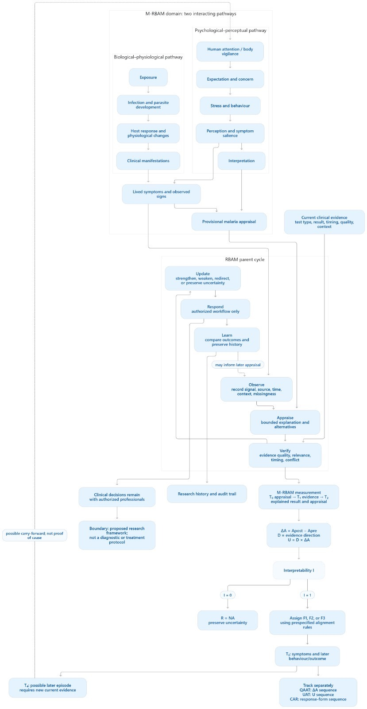

Welcome. Ask a question or add evidence in the Evidence records tab. Without model credentials, chat stays in demo mode.

TRAJECTORY LANGUAGE MODEL · LIVE PROTOTYPE
Connecting…
COGNISEEK
Seek Truth. Ignite COGNISEEK.
TLM · Live trajectory workspace.
A live interface for trajectory-aware interaction, evidence records, uncertainty tracking and inspectable traces. This is an early TLM prototype, not a trained foundation model.
Saved records
Loading…
Review matching evidence
Episode result
No episode classified yet.
Separate trajectories
No trajectory loaded.
QAAT = raw appraisal change; UAT = evidence-normalized movement; CAR = categorical response. Missing values remain null. Synthetic test success is not clinical validation.